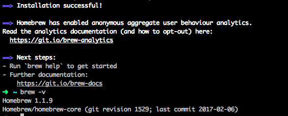

Version Control: Git and GitHub
Git is version control software. It helps us keep track of different versions of our code and lets us collaborate with other developers on a project. We will use GitHub, an essential cloud-based companion tool to Git. This is where your code repositories are stored.
Create a Github account
If you already have a GitHub account, you can skip to the next section.
- In your browser, sign up for a GitHub account by entering a username, email address, and password.
- In Step 2: Choose your plan, select Unlimited public repositories for free and click Continue.
- Fill out the survey or skip Step 3.
Install Git
Click on the arrow (^) below to expand the section for your operating system.
If you installed Cmder, you already have Git! Give yourself a high-five!
Now all you have to do is configure some Git settings.
In this section we will:
- Set your name in Git
- Set your email in Git
Open Cmder by searching for "cmder" in the task bar or by selecting the pin in your Start menu.
At the prompt set your user name by running the command
git config --global user.name "Your Name"replacing the textYour Namewith your own full name, keeping the quotation marks.Next, set your user email address by running the command
git config --global user.email youremail@example.comreplacingyouremail@example.comwith your own email address.Take a moment to verify your git version by typing
git --versionin Cmder. You must have git version 2.16.0 or higher for session work.
Install Homebrew - a package manager to install and manage development software you'll use.
In Google Chrome, navigate to http://brew.sh/
Copy the text underneath the "Install Homebrew" header.

In iTerm2 paste the text copied from the Homebrew website at the arrow command prompt and press Enter.
If you are prompted to install Command Line Developer Tools select the Install button and accept the license agreement.

At the prompt "Press RETURN to continue or any other key to abort" press Return/Enter.
When prompted, type in the password that you use to login to your computer.
It may look like you’re not typing anything in but this is because it doesn’t want to display your password on the screen for security. Just type your full password and press Enter.
The process will run for a few minutes until it completes. When finished type
brew -v. This should display the version number of Homebrew that you have installed. Your screen should look similar to the following:
Install Git
In iTerm2, type
brew install gitand press enter.When the process completes, type
git --versionat the arrow prompt to ensure Git was properly installed. If it is properly installed you should see something likegit version 2.8.3returned.Now we need to configure our Git version control so that you can use it with GitHub later
At the prompt (the green arrow) set your user name by running the command
git config --global user.name "Your Name"replacing the textYour Namewith your own full name, keeping the quotation marks.Next, set your user email address by running the command
git config --global user.email youremail@example.comreplacingyouremail@example.comwith your own email address.
Install GitKraken
GitKraken is a GUI for Git that will help visualize changes as we learn about version control.
GitKraken is free for non-commercial use, but it will occasionally ask if you are using GitKraken for commercial use. Select that you are using it for non-commercial use.
- Download GitKraken from https://www.gitkraken.com.
- Install GitKraken. It will ask you to create an account or connect to GitHub. Select the option to connect to GitHub and enter your GitHub credentials.